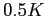
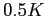

Assessing the knowledge-base for commercially exploited marine fishes and invertebrates with a new global database of stock assessments
Alternative Title 1: A new global stock assessment database for exploited marine species
Alternative Title 2: Understanding marine population dynamics using a new global database
Suggested Running Title: A new global stock assessment database
Data used to assess the status of individual fish stocks varies from
very little information on many of the world's artisanal fisheries, to
commercial landings at various levels of geographic and taxonomic
aggregation, research surveys, and sophisticated population dynamics
models that integrate many sources of information. Previous
evaluations of the state of global fisheries have used catch or
landings data, which may be poor proxies for fish stock abundances. A
global compilation of stock assessment data in the mid-1990s enabled
substantial syntheses of stock status; however the focus of this
database was on stock-recruitment relationships and it is now 15 years
out of date. To facilitate contemporary syntheses, we have assembled a
comprehensive database of the most intensively studied commercially
exploited marine fish stocks. The database includes time series of:
total biomass, spawner biomass, recruits, fishing mortality, and
catch; reference points; and ancillary information on the life
history, management, and assessment methods for each stock. Here, we
present the first overview of the structure and content of the
database. We further evaluate the knowledge-base for assessed marine
fishes. Globally, publicly available stock assessments were found for
322 stocks (286 species of
fishes representing 45 families and
36 species of invertebrates representing
12 families), from 18
national and international management institutions. Assessments are
available for only XX percent of global marine fisheries catches by
weight and XX percent by value. There is substantial spatial
variation in availability of assessed stocks, with XX percent coming
from north temperate regions (North Atlantic, North Pacific).
Geographic differences in assessment methods show that Statistical
Catch at Age (SCA) models are widely used by the west coast of the
U.S. (XX percent of assessments), regional fishery management
organizations in the Pacific (XX percent of assessments), and New
Zealand (XX percent of assessments); the east coast of the U.S. is
transitioning from Virtual Population Analysis (VPA) to SCA (XX
percent of assessments conducted since 2000 have used SCA); while VPA
is still the dominant assessment
technique in western Europe (XX percent of assessments).
Keywords: marine fisheries, meta-analysis, population dynamics models, relational database, stock assessment, synthesis.
Marine wild capture fisheries provide more than 80 million tons of
fisheries products (both food and industrial) per year and employ 43.5
million people (wild capture and aquaculture, (FAO, 2009)).
At the same time, fishing has been recognized as having one of the
most widespread human impacts in the world's oceans
(Halpern et al., 2008), and the Food and Agricultural
Organization of the United Nations (FAO) estimates that two-thirds of
fish stocks globally are fully exploited or overexploited
(FAO, 2009). While many fisheries have reduced exploitation
rates to levels that should promote recovery, overfishing continues to
be a serious global problem (Worm et al., 2009). Fishery
managers are asked to address multiple competing objectives, including
maximizing yields, ensuring profitability, reducing bycatch, and
minimizing the risk of overfishing. Given the enormous social and
economic costs (Rice et al., 2003) and ecosystems
consequences (Myers et al., 2007; Frank et al., 2005)
of collapsed fisheries, it is imperative that we are able to quickly
learn from successful and failed fisheries from around the world.
Effective management of exploited fish populations generally requires
an understanding of where the current size and harvest rate
lie in relation to the size and rate which maximize
fishery benefits or limit the risk of overfishing. This process of
quantitative determination of stock status and estimation of reference
points is called stock assessment. Some fisheries in developing
countries have apparently provided sustainable yields for long periods
of time without formal stock assessment (e.g. many community-managed
fisheries in Oceania, (Johannes, 2002)). This has been achieved by
limiting harvest rates, often through gear restrictions or seasonal or
area closures. In modern industrialized fisheries, however, where fishing
capacity exceeds the productivity of fished stocks stock
assessment is an integral component of responsible
management (Hilborn & Walters, 1992).
Even in developed countries, however, not all stocks are assessed.
For example, in 2007, of the 528 fish and invertebrate stocks
recognized by the National Marine Fisheries Service (NMFS), only 179,
or slightly over one-third, were fully assessed
(National Marine Fisheries Service, 2008). An assessment by the European Environment
Agency (EEA) in 2006 indicated that the percentage of commercial
landings obtained from assessed stocks ranged between 66-97 percent in
northern European waters and 30-77 percent in the Mediterranean
(European Environment Agency, 2009). The New Zealand Ministry of Fisheries
reports the status of 117 stocks or sub-stocks out of a total of 628
stocks managed under New Zealand's Quota Management System
(New Zealand Ministry of Fisheries, 2009). In Australia, 98 federally managed stocks have
been assessed (Wilson et al., 2009) out of an unknown total.
The extent to which stocks are assessed elsewhere in the world is
currently unknown.
The global database of fishery landings compiled by FAO (FAO, 2009)
and synthesized by the Sea Around Us project
(Watson et al., 2004) has proven to be a valuable resource
for understanding fishery status; however, catch data alone can be
misleading when used as a proxy for stock size. Many papers have used
these catch databases to examine changes in fishery status
(Worm et al., 2006; Costello et al., 2008), including
changes in trophic level (Essington et al., 2006; Pauly et al., 1998; Newton et al., 2007).
Most of these analyses rely (either explicitly or implicitly) on the
assumption that catch or landings is a reliable index of stock size.
Critics have pointed out that catch can change for a number of reasons
unrelated to stock size, including changes in targeting, fishing
restrictions, or market preferences (Hilborn, 2007; Murawski et al., 2007; de Mutsert et al., 2008). Even
when catch is standardized by the amount of fishing effort
(catch-per-unit-of-effort, CPUE), it can be an unreliable index of
relative abundance (Walters, 2003; Harley et al., 2001; Polacheck, 2006; Hutchings & Myers, 1994).
Stock assessments consider time series of catch along with other
sources of information such as: natural mortality rates, changes in
size or age composition, stock-recruitment relationships, and CPUE of
different sectors or of fishery-independent surveys. Because they
integrate across multiple sources of information, stock assessment
models are thought to provide a more accurate picture of changes in
abundance than catch data alone (Sibert et al., 2006). Yet,
without a current and comprehensive database of stock assessments,
scientists wishing to conduct comparative analyses of marine fish
population dynamics and fishery status have little choice but to use
problematic catch data.
The first global database of stock assessment information, the Myers
Stock Recruitment Database, was developed by Ransom Myers and
colleagues in the mid-1990s (Myers et al., 1995b). While
the database was primarily known for its time series of stock and
recruitment, it did contain time series of fishing mortality rates for
many stocks, however, biological reference points were largely absent. The
original release version of the Myers database
(Myers et al., 1995b) contained spawning stock size and
recruitment time series for 274 stocks representing 92 species as well
as time series of fishing mortality rates for 144 stocks. It was used
to:
![\begin{inparaenum}[1\upshape )]\item
decisively answer the question of whether ...
...Myers:etal:1999:cjfas, Myers:etal:2002:najfm,
Dorn:2002:najfm} \end{inparaenum}](img2.png)
. The Myers
database has also been used for several studies of collapse and
recovery of exploited fish populations (Hilborn, 1997; Hutchings, 2000,2001)..
Although the original Myers database (Myers et al., 1995b)
has proven to be a valuable resource, it is now 15 years out of date.
For stocks that were depleted in 1995, these additional 15 years
include valuable observations at low stock size or of a recovering
population, both of which are critical for estimating population
dynamics parameters such as the behaviour of the stock-recruitment
relationship near the origin. In addition, there have been numerous improvements in
stock assessment methodologies (including important advances in
statistical catch-at-age or catch-at-length models) and assessments
have been conducted for the first time for many species.
Previous meta-analyses of fishery status have been hampered by the
lack of a global assessment database containing biological reference
points (BRPs, e.g., the total/spawning biomass and fishing mortality rate that
produce Maximum Sustainable Yield (MSY),  and
and  ). Knowledge of BRPs
is important if stocks are to be managed for high yields that can be
sustained over time (Mace, 1994). Without information on
reference points, previous analyses of stock assessments or catch data
have been forced to use non-biological thresholds to define fishery
status, such as the greatest 15-year decline
(Hutchings &
Reynolds, 2004) or 10 percent of maximum catch
(Worm et al., 2006). Ad hoc reference points based on some
fraction of the maximum of a time series also have undesirable
statistical properties and can result in false collapses when applied
to inherently variable time series of catch or abundance
(Branch, 2008; Wilberg & Miller, 2007). Complicating
comparisons of fishery status is the fact that different BRPs are used
in different parts of the world and even the same BRP can be used in a
different manner, for example, as a target or a limit.
). Knowledge of BRPs
is important if stocks are to be managed for high yields that can be
sustained over time (Mace, 1994). Without information on
reference points, previous analyses of stock assessments or catch data
have been forced to use non-biological thresholds to define fishery
status, such as the greatest 15-year decline
(Hutchings &
Reynolds, 2004) or 10 percent of maximum catch
(Worm et al., 2006). Ad hoc reference points based on some
fraction of the maximum of a time series also have undesirable
statistical properties and can result in false collapses when applied
to inherently variable time series of catch or abundance
(Branch, 2008; Wilberg & Miller, 2007). Complicating
comparisons of fishery status is the fact that different BRPs are used
in different parts of the world and even the same BRP can be used in a
different manner, for example, as a target or a limit.
Here we present a new global database of stock assessments for
commercially exploited marine fish populations. The database is an
update and extension of that developed by Ransom Myers, and is named
the RAM Legacy database in honor of his pioneering contribution. This
effort is the first global stock assessment database to:
- Use a formal relational database structure;
- Use source control software to organise release versions;
- Include metadata related to the geographic location of the stock, the type of assessment model used, and the original source document for the assessment data;
- Include biological reference points and stock-specific life history information.
We have used the database to assess the knowledge-base for management of marine fish populations and address the following questions:
- What fraction of world wild-capture fishery landings come from assessed stocks and how does this proportion vary by region?
- What is the temporal coverage of stock assessments, i.e. how far back do stock assessments look when reconstructing trends in abundance?
- What are the taxonomic and geographic biases, if any, in assessed stocks?
- Which stock assessment approaches and biological reference points are used and how does this vary by region?
The RAM Legacy database is a global relational database designed and
developed to store data from all current and accessible population
dynamics model-based fisheries stock assessments for marine fish and
invertebrate populations. Time series of spawning stock biomass (SSB),
total biomass (TB), recruits (R), total catch (TC) or landings (TL),
and fishing mortality (F) from individual stock assessments form the
core of the database. Apart from catch/landings, these time series
are not raw data, but rather the output of population dynamics models;
depending on the type of assessment model not all of these time series
were available for every stock. The database also contains details
about the time series data, including the age and sex of spawners, age
of recruits, and the ages used to compute the fishing mortality, as
well as BRPs and some life history information (e.g. growth
parameters, age and length at 50% maturity, natural mortality).
Metadata for each stock assessment consists of taxonomic information
about the species (retrieved from the Integrated Taxonomic Information
System (ITIS) (http://www.itis.gov)), the geographic location of the
stock (primary, and in some cases, secondary and tertiary Large Marine
Ecosystem, LME), the management body that conducted the assessment,
the assessment methodology, the reference for the stock assessment
document, the name of the recorder entering the assessment data, and
the date the assessment was entered. Many assessments, particularly
those for invertebrates, were based only on CPUE time series rather
than population dynamics models. While we included these in the
database, the analyses presented here focus on stocks assessed by
proper assessments.
We employed a variety of search methods in an attempt to obtain all
recent fisheries stock assessments. Publically available stock
assessment reports available from the internet were the primary data
source. These reports were obtained either from the website of the
relevant management agency or directly from stock assessment
scientists. Assessments also were obtained from the primary
literature and through personal contacts at fisheries management
agencies. Significant contributions also were made by the other members
of the National Center for Ecological Analysis and Synthesis (NCEAS)
working group ``Finding common ground in marine conservation and
management''. Relevant assessment data were first transferred into a
standardized spreadsheet template by a number of recorders, including
ourselves, assessment authors, our NCEAS collaborators, and associated
graduate students and postdoctoral researchers, and then uploaded into
the relational database management system by the first author.
The database is implemented in the Open Source PostgreSQL relational
database management system (RDBMS) (PostgreSQL Global Development Group, 2009), and includes tables for the assessment metadata,
time series values, time series units, and biometrics (a catch-all term
for data, such as life history characteristics or BRPs, that are not
part of a time series). The relationship between the different database
tables is shown in the entity relationship diagram (Fig. S1).
RDBMSs form the server back-end to a great many applications of
interest to ecologists, including web-clients and GIS software, and
have a number of advantages over spreadsheet or flat text file data
compilations. First, housing stock assessments in an RDBMS allows
multiple users to concurrently access and extract subsets of data in
an efficient and reproducible manner. Second, with the development of
Application Programming Interfaces (APIs) that allow analytical
softwares to directly communicate and extract data from the database,
a common data environment is established, independent of one's choice
of analytical software (e.g., SAS:SAS ACCESS, Matlab: Matlab/Database,
R:RDBI/RODBC, Perl:DBI, etc.). Users familiar with Structured Query
Language (SQL) can also query the database directly from their
analytical software of choice and the same SQL query will extract the
same data through each of these applications. Third, data products
tailored to specific projects can be generated and stored as dynamic
(continually updated) ``views'' within the database. These are
typically rectangular, spreadsheet-like results of an expansive query
of the relevant tables that can be readily read into all commonly-used
analytical software. The use of views is, however, greatly
advantageous over manipulating spreadsheets or flat text files for
importing into a specific analytic software, which runs the risk of
losing data integrity (e.g. multiple copies) and becomes impractical
with large, non-rectangular datasets and multiple users.
We have employed several mechanisms to ensure that the database is of
high quality. During the data recording process, assessment authors
often were contacted to clarify aspects of the assessment or to obtain
more detailed data. Time series data presented in figures were, for
example, only entered into the database if the exact numbers could be
obtained from the assessment or its authors. In cases where multiple
models were presented in an assessment without a preferred or best
model being denoted, we attempted to ascertain which model was
preferred by the stock assessment scientist, but included all model
results whenever this was not possible. Once uploaded into the
database all stock assessments underwent an additional Quality
Assurance/Quality Control (QA/QC) step, to ensure that the entered
data replicated that of the original assessment document exactly. This
process consisted of creating a QA/QC summary document for each
assessment, containing summary details of the stock, a selection of
biometrics and ratios for comparison (e.g. current status relative to
BRP), and time series plots of the biomass, recruitment, and
exploitation trajectories. QA/QC documents were then returned to
assessment recorders and an electronic trail of subsequent
correspondence was captured using a bug tracking system. Recorders
were responsible for checking, and where necessary correcting, their
QA/QC documents, after which all corrections were transmitted back to
the operational database and a quality controlled flag was inserted to
signify the assessment had passed the check. Only assessments that
have passed this QA/QC step are available for subsequent analyses.
To facilitate integration of the RAM Legacy database with related
databases, such as Fishbase (Froese & Pauly, 2009) and the
Sea Around Us Project's (SAUP) global landings database
(Watson et al., 2004), each species present in the RAM Legacy
database was assigned a matching FishBase species name and species
code as well as the SAUP taxon code. Additionally, each stock was
assigned to a primary, secondary, and tertiary Large Marine Ecosystem
(LME) (NOAA, 1998). LMEs encompass the continental shelves
of the world's oceans and represent the most productive areas of the
oceans. Open ocean areas beyond the continental shelves are, however,
not included. Large, highly migratory oceanic species such as tuna
were therefore assigned to new categories ``Atlantic High Seas'',
``Pacific High Seas'', ``Indian High Seas'', and ``Subantarctic High
Seas''.
We first assess the scope of the stock assessments held in the current
version of the RAM Legacy database (Version 1.0, 2010) in terms of
institutional contributions, geography, taxonomy, global fisheries,
timespan, and ecology. To evaluate the taxonomic scope of the
database, we compare the taxonomy of assessed stocks with the
diversity of i) all marine fishes (as represented by FishBase), and
ii) marine fishes in global fisheries catches (as represented by the
SAUP database), and discuss taxonomic biases in species included in
catch data and in populations assessed using stock assessments. To
determine what fraction of world wild-capture fisheries landings come
from assessed stocks, we used the SAUP's average global fisheries
catches from the most recent ten years of available data (1995-2004);
we also discuss limitations to obtaining assessments for some of the
world's major fisheries.
Next, we briefly overview the types of asssessment models and BRPs
contained within the stock assessments, and the frequencies of
different assessment methods and BRPs overall and by management body.
We then evaluate the status of assessed stocks overall, by management
body and by trophic level, using standard reference points so that all
stocks are referenced to a comparable benchmark. Following
Froese & Proelß (2010) and Worm et al. (2009), we
compare the current status and exploitation rate of stocks relative
to their MSY reference points, and  , respectively.
, respectively.
We do not advocate the use of MSY targets for management, but still
report MSY-related BRPs because they can be used to compare multiple
stocks. For those assessments that did not contain MSY reference
points, but did include total catch ( ,
,
 ) and total biomass (
) and total biomass ( ,
) time series data, we used a Schaefer surplus
production model to estimate total biomass and exploitation rate at
MSY (
,
) time series data, we used a Schaefer surplus
production model to estimate total biomass and exploitation rate at
MSY ( and , respectively). Surplus production
of stock
and , respectively). Surplus production
of stock  in year
in year  ,
,  , is a commonly used measure of
stock productivity. The surplus production can be calculated as:
, is a commonly used measure of
stock productivity. The surplus production can be calculated as:
 |
(1) |
where,
 is the total biomass of stock in year
is the total biomass of stock in year
 is the total catch of stock in year
is the total catch of stock in year
We fit a Schaefer surplus-production model, which is based on a logistic model of population
growth to the catch and total biomass time series data. The predicted surplus production in each
year in the Schaefer model is given by:
 |
(2) |
where,
 is the maximum sustainable yield
is the maximum sustainable yield
 is the carrying capacity or equilibrium total biomass in the absence of fishing
is the carrying capacity or equilibrium total biomass in the absence of fishing
We estimated the model parameters ( and ) using maximum
likelihood in AD Model Builder (ADMB Project, 2009) assuming that the
residuals
 were normally
distributed. For the Schaefer model, is simply , and the
harvest rate that results in maximum sustainable yield, , is
were normally
distributed. For the Schaefer model, is simply , and the
harvest rate that results in maximum sustainable yield, , is
 . Carrying capacity was constrained to be less than twice the
maximum observed total biomass.
. Carrying capacity was constrained to be less than twice the
maximum observed total biomass.
Finally, we discuss potential applications of the database, point out
its limitations and caveats about its use, and outline directions for
future development.
All data handling was carried out using a PostgreSQL relational
database management system (PostgreSQL Global Development Group, 2009). Statistical
analyses and generation of plots were conducted with the R Environment
for Statistics and Graphics (D, 2009) using the packages RODBC,
KernSmooth, gregmisc, xtable, ape, gsubfn, IDPmisc, doBy, and
beanplot. The map in Figure 1 was generated using the
Generic Mapping Tools (Wessel & Smith, 1991).
In total, 322 recent stock assessments for
286 marine fish and 36
invertebrate populations are included in the RAM Legacy database
(Version 1.0, 2010).
The database includes stocks assessed by fisheries management bodies
in Europe, the United States, Canada, New Zealand, Australia, Russia,
South Africa and Argentina (Table 1). Also included are assessments
conducted by eight Regional Fisheries Management Organizations
(RFMOs), in the Northwest Atlantic, Atlantic, Pacific and Indian Ocean
(Table 1). Assessments from the United States comprise by far the most
stocks of any country or region (n=137);
assessments from the European Union's management body ICES comprise
the the second greatest number of stocks (n=63).
Whereas nations are responsible for managing all populations within
their EEZs, RFMOs typically focus on a certain type of species (e.g.
halibut, tunas) or fisheries (e.g. pelagic high seas) within a given
area and hence assess a smaller number of stocks.
Most assessments come from North America, Europe, Australia, New
Zealand and the High Seas, while few are entered from regions such as
Southeast Asia, South America, and the Indian Ocean (outside
Australian waters) (Figure 1). LMEs with the greatest number of
assessed stocks are the Northeast U.S. Continental Shelf (n=58),
California Current (n=35), New Zealand Shelf (n=29),
Celtic-Biscay Shelf (n=26), Gulf of Alaska (n=25), East Bering Sea (n=22)
and Southeast U.S. Continental Shelf (n=20) (Figure 1).
157 species from
57 families and 20
orders are included in the database (Figure 2). Five
taxonomic orders (Gadiformes (n=67),
Perciformes (n=60), Pleuronectiformes (n=53),
Scorpaeniformes (n=41) and Clupeiformes (n=36)) account for
80% of available stock assessments. Of these, Perciformes, the
most speciose Order of marine fishes are in fact underrepresented in
the database (46.04% of all marine fish species vs. 19%
of all marine fish assessments), while it is the other four orders
that are taxonomically overrepresented: Clupeiformes (2.1% of marine
fishes vs. 11% in the database), Gadiformes (3.3% of marine fishes
vs. 21% in the database), Pleuronectiformes (4.5% of marine fishes
vs. 17% in the database), Scorpaeniformes (8.5% of marine fishes
vs. 12% in the database) (Figure 3).
Assessed marine fish stocks in the RAM Legacy database comprise a
relatively small proportion of harvested taxa (XX% of fish species
from the SAUP database) and an even smaller proportion of marine fish
biodiversity (XX% of fish species in FishBase; Figure 3). In turn,
catches from the SAUP database, which come from XX species and XX
orders (Figure 3), represent only XX% of the 12339 species and XX%
of the 54 different orders present in FishBase (Figure 3).
Table 2
Of the 322 stock assessments, time series data of
catch/landings were available for 306 stocks (X%),
of SSB for 269 stocks (X%), and of recruitment for
267 stocks (X%). The median lengths of
catch/landings, SSB, and recruitment timeseries were
38, 34, and 33 years,
respectively. The time period covered by 90%
of assessments is: catch/landings (1967-2007), SSB (1972-2007), recruitment
(1971-2006), while that covered by 50% of assessments is: catch/landings
(1983-2004), SSB (1985-2005), recruitment (1984-2003) (Figure 4).
In addition to the 322 assessments in the
database, indices of relative abundance from scientific surveys are
available for an additional 26 stocks. The
three most common assessment methods were Statistical catch-at-age/length models (n=162),
Virtual Population Analyses (n=90) and Biomass dynamics model (n=45).. .....Need
to add a sentence here about the regional differences.... .
The total number and percentage of assessments that reported biomass-
or exploitation- based reference points of any sort was
255 (81%) and
220 (69%),
respectively. From these assessments,
62 report both a biomass-based and an
exploitation-based BRP and appear as solid dots on
Figures 5 and 6. Schaefer-derived BRPs
add an additional 178 assessments, for
a total of 240 assessments used to generate
Figure 5. Overall,
59% of assessed stocks are below
their biomass-related MSY BRP and
32% are above their
exploitation-related MSY BRP. Different management bodies have
different overall status of current biomass to BRPs
(Figure 6).
Assessed species span a range of ecological traits. In terms of their
trophic level, we see XXX (Figure 7). The total number and
percentage of assessments that reported any life-history information
(growth, maturity, fecundity) was 286.
The RAM Legacy Database of available stock assessments for the world's
marine fisheries, although non-exhaustive, provides a basis to
evaluate the existing knowledge-base of exploited marine populations.
The stocks comprising the database are predominantly from developed
nations with properly identified fisheries management bodies and tend
to cover a recent time period. Few assessments extend back beyond 30
years from present. The taxonomic makeup of available assessments is a
very limited subset of the accepted taxonomic coverage of marine
species worldwide.
There are important geographic biases in the amount of assessments entered per LME
The question of geographic bias relates to whether:
![\begin{inparaenum}[1\upshape )]\item an assessment is
conducted on a stock; \it...
...tive collation we undertook may have
overlooked the assessment \end{inparaenum}](img22.png)
. Whether an assessment is conducted for a
given stock depends upon a multitude of factors, including the
economic value of the stock and availability of fiscal resources to
collect the data required for an assessment. How accessible
assessments are for entry depends upon the transparency and access
policies of the relevant management agencies, which varies
geographically. Similarly, the legal context where fisheries are
prosecuted will strongly influence the requirement for conducting
stock assessments. In the United States, the Magnuson-Stevens Act
defines what stocks are to be monitored and managed, hence a large
number of the assessments in the RAM Legacy database are under the
jurisdiction of the US National Marine Fisheries Services. Our
incomplete search for assessments could also give rise to geographic
biases, as concerted collation efforts have only been conducted in
those assessment-rich regions of It is hoped that readers of this
article can assist in correcting these biases by participating in
future updates of the RAM Legacy database.
Note Also: from Figure 4 SOFIA 2008 (FAO 2009) - The top 10
wild-caught marine fisheries producer countries are China, Peru,
U.S.A., Indonesia, Japan, Chile, India, Russia, Thailand, Philippines.
We only have assessments for U.S.A. and Russia (and only 2 for
Russia!). Most major fish producing countires do not do assessments or
do not make them accessible, still to be decided how to phrase this.
Taxonomic biases in those species that are assessed include ...
Assessment outputs e.g. biomass timeseries, are model estimates, not
raw data. The uncertainty associated with these estimates should be
carried forth in subsequent analyses. The RAM Legacy database
structure allows for estimates of uncertainty (standard errors, 95%
credible/confidence intervals), however these estimates are often
missing from assessments either because they aren't produced by the
assessment model (e.g. non-bootstrapped VPA assessments) or the focus
of the assessment document was on central tendency (e.g. mean
biomass), not the associated uncertainty. Note that this view is
changing with the advent of MCMC aproaches to Bayesian inference for
assessments, bootstrap methods, statistical catch-at-age models
(ADMB Project, 2009) and a general focus on uncertainty
(Walters & Maguire, 1996). As with any analysis, clearer
inference on the strength of a signal is available when all
uncertainty in the data is carried forth. This represents a difficulty
for large-scale analyses of fisheries data in that in an ideal world
one would access the raw data per sub-unit (e.g. stock) and carry
forth the uncertainty at all levels of the analysis. In the case of
assessments, the raw data is typically catch-at-age matrices and
potentially survey indices. To understand the fleet characteristics
and survey stratification schema for each stock in a potentially
global meta-analysis would be extremely time consuming and
error-prone. So, the expert opinion of those researchers most familiar
with the data, stock assessment authors, is used but without
accompanying uncertainty estimates the strength of conclusions drawn
may be weakened.
The original database developed by Dr. Myers was used to address a
variety of ecological question derived from stock-recruit
relationships. This was possible because of the timeseries of stock
and recruitment generated in assessment using VPA-type models. With
the increasing use of statistical catch-at-age/length models, an
underlying stock-recruit relationship is assumed to exist. Estimating
the parameters of a stock-recruit relationship using timeseries from
such models does not constitute a valid statistical procedure. More
generally, the increasing use of Bayesian methods that incorporate
prior information poses a challenge for meta-analysis of such model
outputs.
Point data are stored in the database with an associated unit, value
and year. We expect to also include age-varying and length-varying
data such as maturity ogive and age-disaggregated natural mortality in
subsequent releases of the RAM Legacy database. In addition to the
initial aim of providing reliable access to timeseries information
about stocks, we hope to also stimulate research in the relationships
of life-history characteristics and their relation to exploitation.
It is anticipated that the RAM Legacy database will continue to grow
with hitherto unentered stocks and updated assessments for already
included stocks. The ultimate goal is to provide a data standard for
researchers to use results from multiple regions to assist in their
own applied and fundamental research in population ecology, fisheries
science, and conservation biology. The development of a standard for
assessment reporting would assist in realizing this goal. For example,
ICES assessments have a very regular standard, including agreed-upon
reference points and regular estimate reporting. This makes the
process of data collation much more routine than unstandardized
documents where the recorder trawls through a report for information.
Certainly different stocks and regions require different formats but
the basic output tables, consisting of total and spawning biomass,
recruitment, catch/landings, estimated fishing mortality over
vulnerable age groups, associated measures of uncertainty, and
commonly-used reference points would streamline the process immensely.
A process whereby the assessment spreadsheets are filled out at each
assessment meeting would be the least error prone method. In return,
the assessment scientists can access results for a global collation of
assessments to further their own research initiatives in population
assessment and management. Other products include
management-agency-level reports containing summaries of all stocks
within their remit. Future versions to the database will also include
timelines of management actions per stock. The RAM Legacy database
contains the corresponding species codes to the Sea Around Us Project
and FishBase, thus facilitating researchers's use of a global
fisheries data ``toolkit'' to address questions on the relationships
between life history attributes and resulting population dynamics in
an exploited setting.
Contributions or corrections to the existing database, as well as
requests to use the database (subject to standard ``Fair Use''
policies), should be directed to the corresponding author.
We sincerely thank all of the fisheries scientists around the world
for conducting the stock assessments that form the basis of this new
global database. We are also grateful for the database contributions,
advice, and support of Trevor Branch, Jeremy Collie, Laurence
Fauconnet, Mike Fogarty, Rainer Froese, Ray Hilborn, Jeff Hutchings,
Simon Jennings, Heike Lotze, Pamela Mace, Michael Melnychuk, Ana
Parma, Renée Préfontaine, Reg Watson, Boris Worm, Dirk Zeller,
and the financial support of the National Science Foundation through
an NCEAS Working Group, the Natural Sciences and Engineering Research
Council (NSERC) of Canada, the Canadian Foundation for Innovation, the
David H. Smith Conservation Research Fellowship, the Schmidt Research
Vessel Institute, and the Census of Marine Life (CoML/FMAP).
-
ADMB Project (2009).
-
AD Model Builder: automatic differentiation model builder.
Developed by David Fournier and freely available from
admb-project.org.
-
Branch, T. (2008).
-
Not all fisheries will be collapsed in 2048.
Marine Policy 32, 38-39.
-
Costello, C., Gaines, S.D. & Lynham, J. (
2008).
-
Can catch shares prevent fisheries collapse?
Science (Washington) 321(5896), 1678-1681.
-
de Mutsert, K., Cowan, Jr., J.H., Essington, T.E. & Hilborn, R.
(2008).
-
Reanalyses of Gulf of Mexico fisheries data: Landings can be
misleading in assessments of fisheries and fisheries ecosystems.
Proceedings of the National Academy of Sciences 105(7),
2740-2744.
-
Development Core Team, R. (2009).
-
R: a Language and Environment for Statistical Computing.
-
Dorn, M. (2002).
-
Advice on West Coast rockfish harvest rates from Bayesian
meta-analysis of stock-recruit relationships.
North American Journal of Fisheries Management 22, 280-300.
-
Essington, T.E., Beaudreau, A.H. & Wiedenmann, J. (
2006).
-
Fishing through marine food webs.
Proceedings of the National Academy of Science 103(9),
3171-3175.
-
European Environment Agency (2009).
-
-
FAO (2009).
-
FISHSTAT-PC: Data retrieval, graphical and analytical software for
microcomputers.
-
Frank, K., Petrie, B., Choi, J. & Leggett, W. (
2005).
-
Trophic cascades in a formerly cod-dominated ecosystem.
Science (Washington) 308(5728), 1621-1623.
-
Froese, R. & Proelß, A. (2010).
-
Rebuilding fish stocks no later than 2015: will Europe meet the
deadline?
Fish and Fisheries (in press).
-
Froese, R. & Pauly, D. (2009).
-
FishBase www.fishbase.org, version (10/2009).
World Wide Web electronic publication.
-
Garvey, J., Wright, R. & Marschall, E. (
2009).
-
Searching for threshold shifts in spawner-recruit data.
Canadian Journal of Fisheries and Aquatic Sciences 66,
312-320.
-
Halpern, B., Walbridge, S., Selkoe, K. et al. (
2008).
-
A global map of human impact on marine ecosystems.
Science (Washington) 319(5865), 948-952.
-
Harley, S., Myers, R. & Dunn, A. (
2001).
-
Is catch-per-unit-effort proportional to abundance?
Canadian Journal of Fisheries and Aquatic Sciences 58,
1705-1772.
-
Hilborn, R., ed. (1997).
-
The frequency and severity of fish stock declines and
increases.
Developing and sustaining world fisheries resources. Proceedings of
the 2nd World Fisheries Congress. CSIRO Publishing, Victoria, Australia.
-
Hilborn, R. & Walters, C.J. (
1992).
-
Quantitative Fisheries Stock Assessment: Choice, Dynamics and
Uncertainty.
Kluwer Academic Publishers.
-
Hilborn, R. (2007).
-
Biodiversity loss in the ocean: how bad is it?
Science (Washington) 316(5829), 1281.
-
Hutchings, J. (2000).
-
Collapse and recovery of marine fishes.
Nature (London) 406, 882-885.
-
Hutchings, J. (2001).
-
Influence of population decline, fishing, and spawner variability on
the recovery of marine fishes.
Journal of Fish Biology Suppl. A, 306-322.
-
Hutchings, J. & Myers, R. (1994).
-
What can be learned from the collapse of a renewable resource?
Atlantic cod, Gadus morhua, of Newfoundland and Labrador.
Canadian Journal of Fisheries and Aquatic Sciences 51,
2126-2146.
-
Hutchings, J. & Reynolds, J. (
2004).
-
Marine fish population collapses: Consequences for recovery and
extinction risk.
BioScience 54, 297-309.
-
Johannes, R. (2002).
-
The renaissance of community-based marine resource management in
Oceania.
Annual Review of Ecology, Evolution, and Systematics 33,
317-340.
-
Liermann, M. & Hilborn, R. (
1997).
-
Depensation in fish stocks: a hierarchic Bayesian meta-analysis.
Canadian Journal of Fisheries and Aquatic Sciences 54,
1976-1984.
-
Mace, P.M. (1994).
-
Relationships between Common Biological Reference Points Used as
Thresholds and Targets of Fisheries Management Strategies.
Canadian Journal of Fisheries and Aquatic Sciences 51(1),
110-122.
-
Minto, C., Myers, R.A. & Blanchard, W. (
2008).
-
Survival variability and population density in fish populations.
Nature (London) 452, 344-347.
-
Murawski, S., Methot, R. & Tromble, G. (
2007).
-
Letter to the editors of Science.
Science (Washington) 316, 1281.
-
Myers, R.A. (2001).
-
Stock and recruitment: Generalizations about maximum reproductive
rate, density dependence and variability using meta-analytic approaches.
ICES Journal of Marine Science 58, 937-951.
-
Myers, R. & Barrowman, N. (1996).
-
Is fish recruitment related to spawner abundance?
Fishery Bulletin 94, 707-724.
-
Myers, R., Barrowman, N., Hilborn, R. & Kehler, D. (
2002).
-
Inferring bayesian priors with limited direct data: applications to
risk analysis.
North American Journal of Fisheries Management 22, 351-364.
-
Myers, R., Barrowman, N., Hutchings, J. & Rosenberg, A.
(1995a).
-
Population dynamics of exploited fish stocks at low population
levels.
Science (Washington) 269, 1106-1108.
-
Myers, R., Baum, J., Shepherd, T., Powers, S. & Peterson, C.
(2007).
-
Cascading Effects of the Loss of Apex Predatory Sharks from a
Coastal Ocean.
Science 315(5820), 1846-1850.
-
Myers, R., Bowen, K. & Barrowman, N. (
1999).
-
Maximum reproductive rate of fish at low population sizes.
Canadian Journal of Fisheries and Aquatic Sciences 56,
2404-2419.
-
Myers, R.A., Bridson, J. & N.J., B. (
1995b).
-
Summary of Worldwide Spawner and Recruitment Data.
Canadian Technical Report of Fisheries and Aquatic Sciences,
No. 2020 p. 327.
-
National Marine Fisheries Service (2008).
-
Status of US Fisheries 2007.
Tech. rep., NMFS.
Http://www.nmfs.noaa.gov/sfa/statusoffisheries/SOSmain.htm.
-
New Zealand Ministry of Fisheries (2009).
-
Stock Status http://fs.fish.govt.nz/Page.aspx?pk=16.
-
Newton, K., Côté, I., Pilling, G., Jennings, S. & Dulvy, N.
(2007).
-
Current and Future Sustainability of Island Coral Reef Fisheries.
Current Biology 17(7), 655-658.
-
NOAA (1998).
-
Large Marine Ecosystems.
Tech. rep., National Oceanic and Atmospheric Administration.
-
Pauly, D., Christensen, V., Dalsgaard, J., Froese, R. & Torres,
Jr., F. (1998).
-
Fishing Down Marine Food Webs.
Science (Washington) 279(5352), 860-863.
-
Polacheck, T. (2006).
-
Tuna longline catch rates in the Indian Ocean: Did industrial fishing
result in a 90% rapid decline in the abundance of large predatory species.
Marine Policy 30, 470-482.
-
PostgreSQL Global Development Group (2009).
-
PostgreSQL, version 8.3.8. http://www.postgresql.org.
-
Rice, J., Shelton, P., Rivard, D., Chouinard, G. & Fréchet, A.
(2003).
-
Recovering Canadian Atlantic cod stocks: the shape of things to come.
ICES CM 2003/U 06, 23pp.
-
Sibert, J., Hampton, J., Kleiber, P. & Maunder, M. (
2006).
-
Biomass, Size, and Trophic Status of Top Predators in the Pacific
Ocean.
Science (Washington) 314(5806), 1773-1776.
-
Walters, C. & Maguire, J. (1996).
-
Lessons for stock assessment from the northern cod collapse.
Reviews in Fish Biology and Fisheries 6(2), 125-137.
-
Walters, C. (2003).
-
Folly and fantasy in the analysis of spatial catch rate data.
Canadian Journal of Fisheries and Aquatic Sciences 60(12),
1433-1436.
-
Watson, R., Kitchingman, A., Gelchu, A. & Pauly, D.
(2004).
-
Mapping global fisheries: sharpening our focus.
Fish and Fisheries 5, 168-177.
-
Wessel, P. & Smith, W.H.F. (
1991).
-
Free software helps map and display data.
EOS Transactions of the American Geophysical Union 72, 441.
-
Wilberg, M. & Miller, T. (2007).
-
Comment on "Impacts of biodiversity loss on ocean ecosystem
services".
Science (Washington) 316, 1285b.
-
Wilson, D., Curtotti, R., Begg, G. & Phillips, K., eds.
(2009).
-
Fishery status reports 2008: status of fish stocks and
fisheries managed by the Australian Government.
Bureau of Rural Sciences and Australian Bureau of Agricultural and
Resource Economics, Canberra.
-
Worm, B., Barbier, E., Beaumont, N. et al. (
2006).
-
Impacts of Biodiversity Loss on Ocean Ecosystem Services.
Science (Washington) 314, 787-790.
-
Worm, B., Hilborn, R., Baum, J.K. et al. (
2009).
-
Rebuilding global fisheries.
Science (Washington) 325, 578-585.
Table 1:
Number of assessments included in the RAM Legacy database by
country and ocean basin, with associated national management bodies
and regional fisheries management organizations (RFMOs).
| Country/Ocean |
Management Body |
Acronym |
No. stocks |
|---|
| Argentina |
Consejo Federal Pesquero |
CFP |
6 |
| Australia |
Australian Fisheries Management Authority |
AFMA |
16 |
| Canada |
Department of Fisheries and Oceans |
DFO |
22 |
| Europe |
International Council for the Exploration of the Sea |
ICES |
63 |
| New Zealand |
Ministry of Fisheries |
MFish |
29 |
| Russia |
Russian Federal Fisheries Agency |
RFFA |
2 |
| South Africa |
Department of Environment and Tourism, Marine and Coastal Management |
DETMCM |
14 |
| USA |
National Marine Fisheries Service |
NMFS |
137 |
| USA |
US state-level management |
US State |
3 |
| Atlantic Ocean |
International Commission for the Conservation of Atlantic Tunas |
ICCAT |
10 |
| |
Northwest Atlantic Fisheries Organization |
NAFO |
8 |
| Indian Ocean |
Indian Ocean Tuna Commission |
IOTC |
1 |
| Pacific Ocean |
Inter-American Tropical Tuna Commission |
IATTC |
2 |
| |
International Pacific Halibut Commission |
IPHC |
1 |
| |
South Pacific Regional Fisheries Management Organization |
SPRFMO |
1 |
| |
Western and Central Pacific Fisheries Commission |
WCPFC |
4 |
| Antarctic |
Commission for the Conservation of Antarctic Marine Living Resources |
CCAMLR |
1 |
Table 2:
The world's forty largest wild-caught fisheries (comprising
less than 41% of total global catches, based on average catches
1995-2004 in SAUP database), and the thirty largest fisheries of
individual stocks (i.e. fisheries identified to the species level;
comprising more than 32% of total global catches), including their
LME, whether or not stock assessments for them are included in the
RAM Legacy database, and the reason if not included (e.g. 1= no
known assessment, 2=assessment is not based on a population dynamics
model, 3=assessment inaccessible).
| Stock Rank |
Stock Number |
Species (Common name, Latin name) or higher taxonomic unit |
LME |
In Database? |
Reason if not included |
|---|
| 1 |
1 |
Peruvian anchoveta, Engraulis ringens |
Humboldt Current |
no |
3 |
| |
2 |
Marine fishes not identified |
South China Sea |
no |
1 |
| |
3 |
Marine fishes not identified |
Bay of Bengal |
no |
1 |
| 2 |
4 |
Alaska pollock, Theragra chalcogramma |
Okhotsk Sea |
yes |
|
| 3 |
5 |
Ammodytes |
North Sea |
yes |
|
| 4 |
6 |
Atlantic herring, Clupea harengus |
Norwegian Sea |
yes |
|
| 5 |
7 |
Alaska pollock, Theragra chalcogramma |
East Bering Sea |
yes |
|
| 6 |
8 |
Capelin, Mallotus villosus |
Iceland Shelf/Sea |
yes |
|
| 7 |
9 |
European pilchard, Sardina pilchardus |
Canary Current |
yes |
|
| 8 |
10 |
Japanese anchovy, Engraulis japonicus |
East China Sea |
no |
3 |
| 9 |
11 |
Inca scad, Trachurus murphyi |
Humboldt Current |
yes |
|
| |
12 |
Marine fishes not identified |
East China Sea |
no |
1 |
| 10 |
13 |
Gulf menhaden, Brevoortia patronus |
Gulf of Mexico |
yes |
|
| |
14 |
Marine fishes not identified |
Yellow Sea |
no |
1 |
| |
15 |
Marine fishes not identified |
Indonesian Sea |
no |
1 |
| 11 |
16 |
Alaska pollock, Theragra chalcogramma |
Gulf ofAlaska |
yes |
|
| 12 |
17 |
Argentinean short-finned squid, Illex argentinus |
Patagonian Shself |
no |
1 |
| 13 |
18 |
Argentine hake, Merluccius hubbsi |
Patagonian Shelf |
yes |
|
| 14 |
19 |
Japanese anchovy, Engraulis japonicus |
South China Sea |
no |
1 |
| 15 |
20 |
Araucanian herring, Strangomera bentincki |
Humboldt Current |
no |
|
| 16 |
21 |
Atlantic cod, Gadus morhua |
Barents Sea |
no |
|
| 17 |
22 |
European sprat, Sprattus sprattus |
Baltic Sea |
yes |
|
| 18 |
23 |
Atlantic herring, Clupea harengus |
North Sea |
yes |
|
| 19 |
24 |
Alaska pollock, Theragra chalcogramma |
Arctic Ocean |
no |
|
| |
25 |
Marine fishes not identified |
Gulf of Thailand |
no |
|
| 20 |
26 |
Atlantic herring, Clupea harengus |
Baltic Sea |
yes |
|
| 21 |
27 |
Cape horse mackerel, Trachurus capensis |
Benguela Current |
yes |
|
| 22 |
28 |
Largehead hairtail, Trichiurus lepturus |
East China Sea |
no |
|
| 23 |
29 |
Japanese anchovy, Engraulis japonicus |
Yellow Sea |
no |
|
| 24 |
30 |
European anchovy, Engraulis encrasicolus |
Black Sea |
no |
|
| 25 |
31 |
Chub mackerel, Scomber japonicus |
East China Sea |
no |
|
| 26 |
32 |
Indian oil sardine, Sardinella longiceps |
Arabian Sea |
no |
1 |
| |
33 |
Decapterus |
South China Sea |
no |
|
| |
34 |
Sciaenidae |
Arabian Sea |
no |
|
| 27 |
35 |
Atlantic mackerel, Scomber scombrus |
North Sea |
yes |
|
| 28 |
36 |
Largehead hairtail, Trichiurus lepturus |
Yellow Sea |
no |
|
| |
37 |
Merluccius |
Benguela Current |
yes |
|
| |
38 |
Marine fishes not identified |
Kuroshio Current |
no |
|
| 29 |
39 |
Alaska pollock, Theragra chalcogramma |
Sea of Japan |
no |
|
| 30 |
40 |
Round sardinella, Sardinella aurita |
Canary Current |
no |
|
|
|
|
|
|
|
Figure 1. Global map of the Large Marine Ecosystems (LMEs) showing the
number of stock assessments present in the database for each LME or High Seas area.
Figure 2. Taxonomic coverage of assessed marine species present in the
RAM Legacy database. The circle located near the middle of the circular
dendrogram represents kingdom Animalia and each subsequent branching
represents a different taxonomic group (Kingdom to Phylum to Class to
Order to Family to Genus to Species). The width of each line is
proportional to the square root of the number of assessments in the
database. The outermost lines represent species and the number of
lines is the number of assessments for each species. The names of
multi-assessment species are not repeated on the outermost portion of
the dendrogram but continue counter-clockwise from the first entry.
Note that branch lengths are chosen for graphical purposes and do not
convey phylogenetic distance.
Figure 3. Comparison of the taxonomic diversity of marine
species as provided by FishBase (top panel), the coverage of catch
data as provided by the Sea Around Us Project (SAUP) database (middle
panel) and the RAM Legacy database (bottom panel). To facilitate the
identification of the taxonomic groups that are not presented in the catch
and assessment data, the FishBase branching pattern of the spoked dendrogram is
maintained to generate other two dendrograms.
Figure 4. Temporal coverage of (A) catch/landings, (B) spawning stock
biomass and (C) recruitment. The temporal coverage for individual
assessments is represented by thin alternating black and grey
horizontal lines in the main panels. Thick horizontal lines at the
base of each main panel represent the time periods which are present
in 90% (black) and 50% (grey) of all series for that data type.
Subfigure histograms contain the frequency of occurrence of the
various timespans without reference to time period. Solid and
long-dash vertical lines within the subfigures represent the median,
2.5% and 97.5% quantiles, respectively.
Figure 5. Current exploitation rate versus biomass for XXX
individual stocks. Exploitation is scaled relative to that which
should allow maximum sustainable yield (uMSY); biomass is scaled
relative to BMSY. Colors indicate probability of occurrence as
revealed by a kernel density smooth function. Solid circles indicate
BMSY and uMSY that were obtained directly from assessments; open circles
indicate that they were estimated from surplus production models.
Figure 6. Current exploitation rate versus biomass for
individual stocks grouped by management unit. Plot details as in
Figure 5.
Figure 7. Mean trophic level of assessed species for
overexploited and non-overexploited stocks. Overexploited stocks are
those for which the current biomass is below the MSY BRP.
Figure 8:
Entity relationship diagram of the RAM legacy database.
|
Assessing the knowledge-base for commercially exploited marine fishes and invertebrates with a new global database of stock assessments
Alternative Title 1: A new global stock assessment database for exploited marine species
Alternative Title 2: Understanding marine population dynamics using a new global database
Suggested Running Title: A new global stock assessment database
This document was generated using the
LaTeX2HTML translator Version 2002-2-1 (1.71)
Copyright © 1993, 1994, 1995, 1996,
Nikos Drakos,
Computer Based Learning Unit, University of Leeds.
Copyright © 1997, 1998, 1999,
Ross Moore,
Mathematics Department, Macquarie University, Sydney.
The command line arguments were:
latex2html fishandfisheries-v2 -split 0
The translation was initiated by Stock-recruitment database administrator on 2010-05-10
Footnotes
- ... Ricard1
- Department of Biology, Dalhousie University, Halifax, NS B3H 4J1, Canada
- ... Baum2
- Scripps Institution of Oceanography, UCSD, 9500 Gilman Drive, La Jolla, CA 92093-0202, USA
- ... Jensen3
- School of Aquatic and Fishery Sciences, University of Washington, Seattle, WA 98195-5020, USA
Stock-recruitment database administrator
2010-05-10